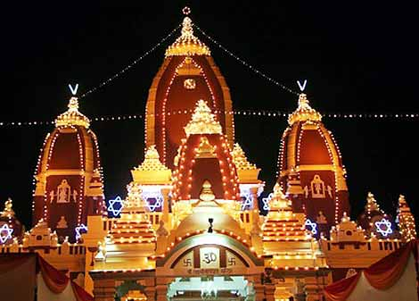
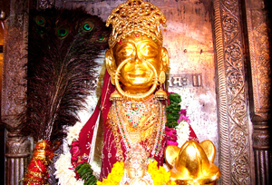
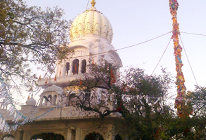

Una is one of the districts of Himachal Pradesh, India, and shares its border with the Hoshiarpur District and Rupnagar district of Punjab. The terrain is generally a plain with low hills. Una has been identified as a main industrial hub and has become a transit town for travellers going to the famous city of Dharamshala or locations within the Himalayas such as Kullu, Manali, Jawalamukhi, and Chintpurni. Una although unchanged for past century has shown huge appetite for growth and development. The City and Urban area is expected to grow at rapid pace amidst the investment coming from native N.R.I community which is huge in number as every household has at least one family member or relative working abroad.
Chintpurni (Hindi: चिंतपूर्णी Punjabi: ਚਿੰਤਪੂਰਨੀ) is a major pilgrimage center and one of the Shakti Peethas in India. The Chintpurni shakti peeth (Chhinnamastika shakti peeth) is located in Una district Himachal Pradesh state, surrounded by the western Himalaya in the north and east in the smaller Shiwalik (or Shivalik) range bordering the state of Punjab. The Chintpurni Shakti Peeth houses the temple of Chinnamastika Devi or Chinnamasta Devi. Chhinnamasta or Chinnamastika temple is one of the 7 major and 51 total Shakti Peethas

The Chinna Mastika Devi is a divine embodiment of self-sacrifice and there by the Chintpurni shri is considered as a Shakti Peetha. The mythology of Daksha yaga and Sati's self immolation is the mythology liked to the Shakti Peethas. Shakti Peethas are holy shrines of Shakti associated with a mythology that says about the falling of body parts of the corpse of Sati Devi, when Lord Shiva carried it and wandered in sorrow. There are 51 Shakti Peeth associated with the 51 alphabets in Sanskrit. It is believed that Sati Devi's feet fell here
The temple is dedicated to Shri Sheetla Devi,who was the wife of Guru Dronacharya. Saint Dronacharya is Mahabharata Guru of the Pandavas and Kauravas. Shri Sheetla Devi is an incarnation of Goddess Durga. In Hinduism, Goddess Sheetala, or Sheetala Mata, is considered an aspect of Shakti. Maa Sheetala is the Hindu Goddess and is known to cure the dreaded disease.The deity is believed to be the Goddess who protects children from small pox and gives them a healthy life. Many women come here to seek the blessings of the Goddess for their children.

Dedicated to the Goddess Durga, the Sheetla Devi Temple is located in Una district of Himachal Pradesh. It is placed nearby Chintpurni Devi Temple in Bharwain. A good number of devotees throng this holy place to take the blessings of Goddess Sheetla Devi and pray for their prosperity and success in life. Perched on the top of the hill, this temple is considered as one of the ninth Devi temples. Local residents of this region are very kind, welcoming and helpful.
.
.
.
Dera Baba Bharbhag Singh is a popular Gurudwara in Una that was established by Sain Baba Bhabhag Singh. Enclosed by Eucalyptus trees, the Gurudwara stands on the top of the hill where thousands of Sikhs throng this place every year to take the blessings of Baba Bharbhag Singh- a saint who made this Gurudwara which was earlier known as Dera. Located 40 km away from Una, tourists can reach this place by road or by rail up to Una or by air up to Chandigarh.

aba Bhar Bhag Singh Mela and Hola Mohalla Fair are few popular fairs that are conducted here during February to offer greetings to Bharbhag Singh Ji. This fair is held during the Holi festival and known for treating mental problems of mentally challenged people. A plenty of visitors come here during this fair and treat their mental problems at this gurudwara by the priest who is known as 'Masands'.